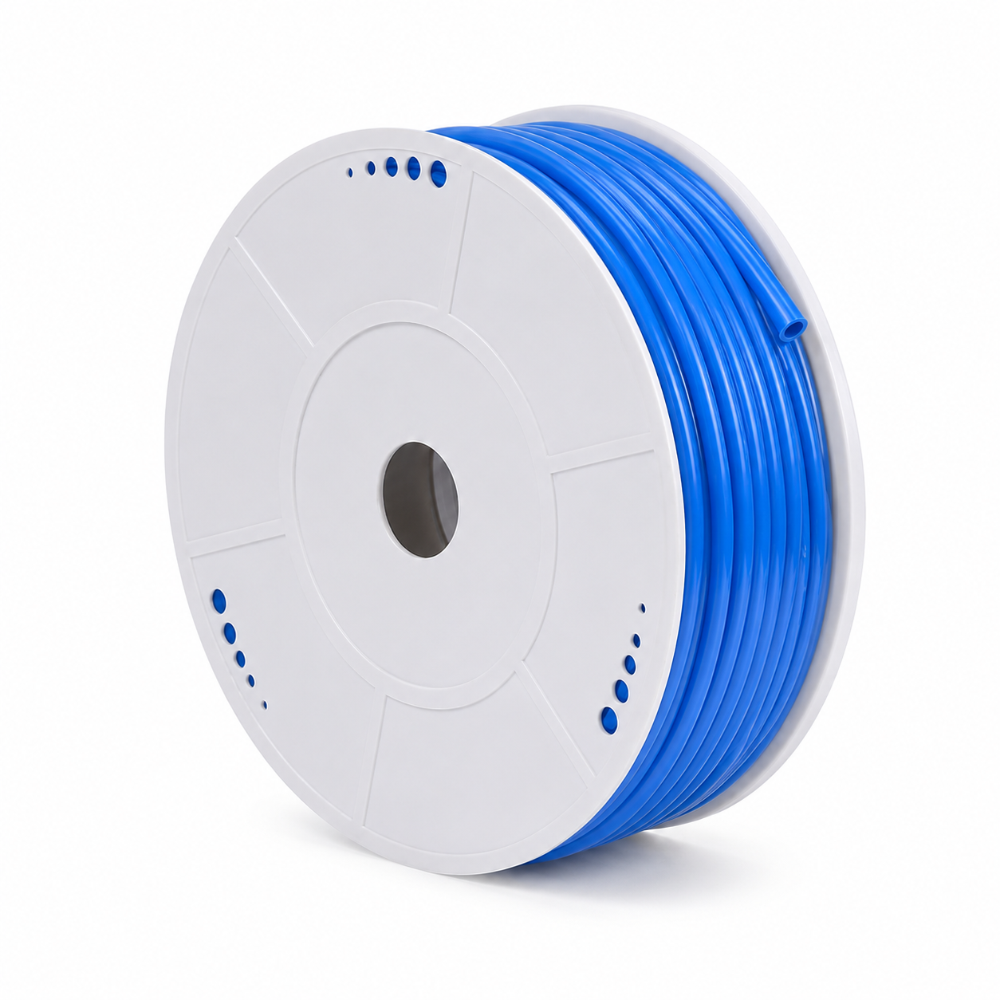
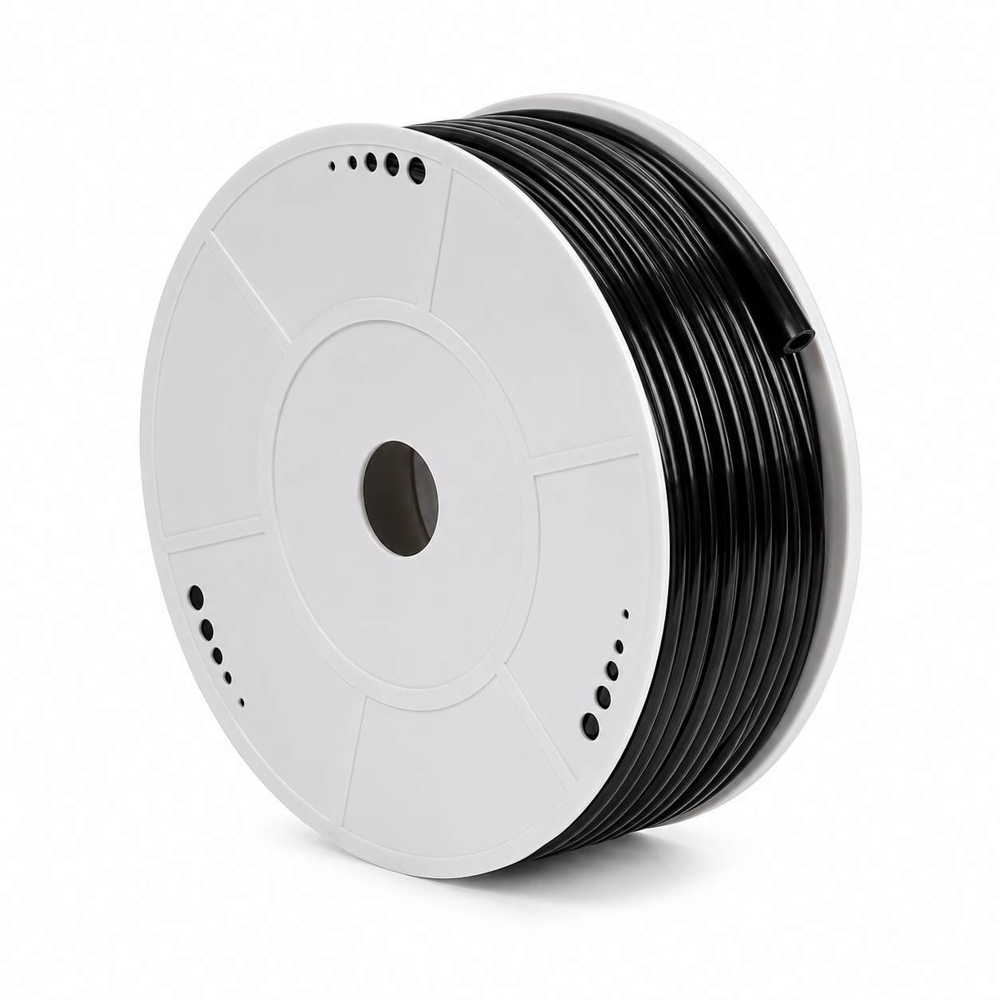
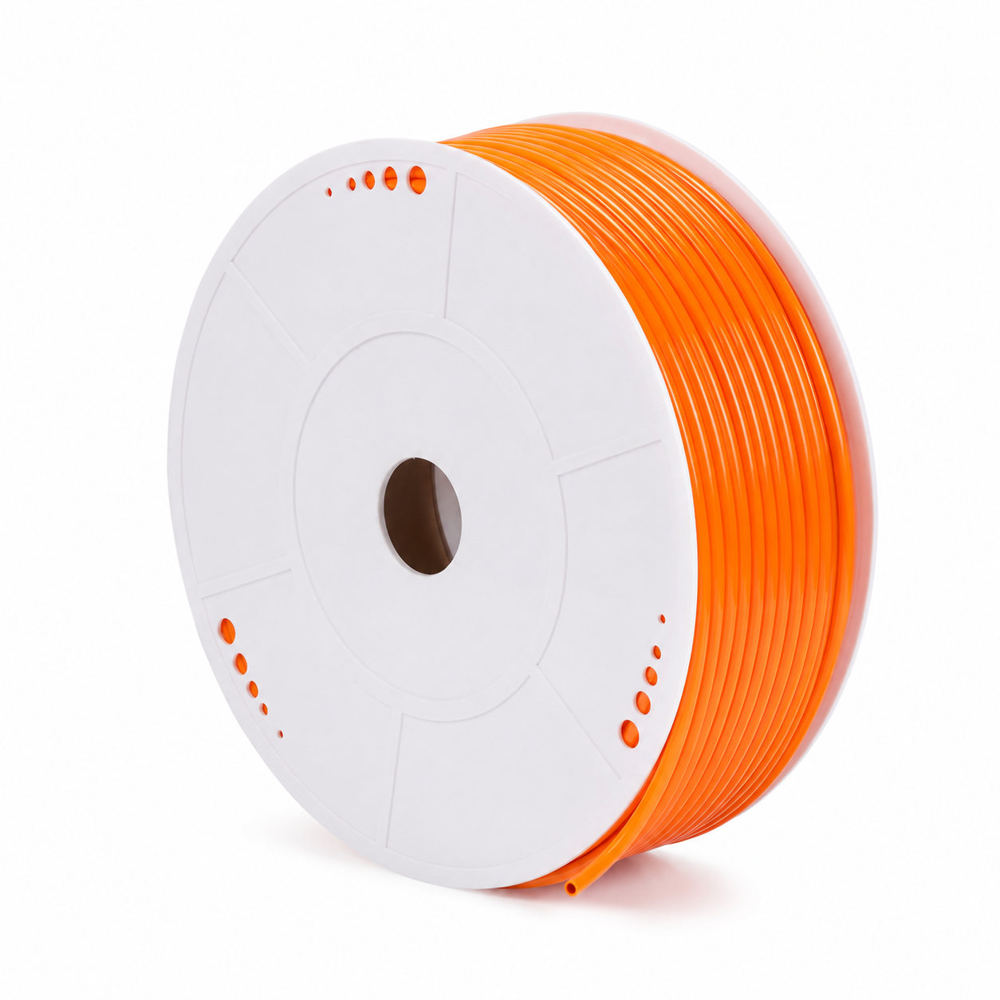

Camtech phân phối phụ kiện khí nén SFC gồm ống khí PU và fitting. Hiện tại chúng tôi giới thiệu dải ống khí PU tiêu chuẩn từ PU-0425 (Ø4×2.5 mm) đến PU-1614 (Ø16×14 mm) — nhiều màu nhận diện, hàng sẵn kho, cắt lẻ theo mét theo yêu cầu.



Dải ống khí PU Camtech đang phân phối — từ size nhỏ Ø4 mm cho đường khí điều khiển, đến size lớn Ø16 mm cho đường khí cấp chính. Tên gọi tắt theo kích thước: PU04×2.5 mm nghĩa là ống đường kính ngoài 4 mm, đường kính trong 2.5 mm.
Mã ống PU của SFC gồm 5 phần. Ví dụ mã PU-0850-100M-BU (ống Ø8×5 mm, cuộn 100 m, màu xanh dương) được đọc như sau:
PU = ống khí Polyurethane tiêu chuẩn dạng thẳng (cuộn).
Hai chữ số chỉ đường kính ngoài của ống: 04 = Ø4 mm, 08 = Ø8 mm,
16 = Ø16 mm. Đây chính là size ống, phải khớp với size của fitting
(khớp nối PC4, PC8, PC10…).
Hai chữ số chỉ đường kính trong tính theo 1/10 mm: 25 = 2.5 mm,
50 = 5.0 mm, 80 = 8.0 mm, 14… theo size lớn
1614 = trong 14 mm. Cùng Ø ngoài 8 mm có 2 lựa chọn:
0855 (trong 5.5) và 0850 (trong 5.0) — ống thành dày hơn thì
chịu áp cao hơn.
200M = cuộn 200 mét (áp dụng size nhỏ 4 mm và 6 mm);
100M = cuộn 100 mét (size từ 8 mm trở lên). Camtech nhận cắt lẻ theo mét.
Ký hiệu màu ở cuối mã: BU = xanh dương, BK = đen…
Dùng màu khác nhau để phân biệt đường khí cấp — đường điều khiển trong cùng một máy.
| Cách gọi theo size | Mã đặt hàng (chưa màu) | Ø ngoài (O.D.) | Ø trong (I.D.) | Chiều dài cuộn |
|---|---|---|---|---|
| PU04×2.5mm | PU-0425-200M-… | 4 mm | 2.5 mm | 200 m |
| PU06×4mm | PU-0640-200M-… | 6 mm | 4 mm | 200 m |
| PU08×5.5mm | PU-0855-100M-… | 8 mm | 5.5 mm | 100 m |
| PU08×5mm | PU-0850-100M-… | 8 mm | 5 mm | 100 m |
| PU10×6.5mm | PU-1065-100M-… | 10 mm | 6.5 mm | 100 m |
| PU12×8mm | PU-1280-100M-… | 12 mm | 8 mm | 100 m |
| PU14×10mm | PU-1410-100M-… | 14 mm | 10 mm | 100 m |
| PU16×14mm | PU-1614-100M-… | 16 mm | 14 mm | 100 m |
Ống PU SFC sản xuất từ nhựa Thermoplastic Polyurethane — mềm dẻo, chịu mài mòn, kháng dầu và nhiều hóa chất không ăn mòn; dùng cho khí nén, nước và chân không.
| Hạng mục | Giá trị | Tiêu chuẩn thử |
|---|---|---|
| Vật liệu | Thermoplastic Polyurethane (PU nhiệt dẻo) | — |
| Môi chất sử dụng | Khí nén, nước, chân không | — |
| Nhiệt độ môi trường & môi chất | −20°C ~ +80°C | — |
| Độ cứng Shore A | 95A | ASTM D-2240 |
| Độ bền kéo | 600 kg/cm² | ASTM D-638 |
| Độ giãn dài khi đứt | 490 ~ 590% | ASTM D-638 |
| Độ mài mòn Taber | 30 ~ 40 mg | ASTM D-1044 |
| Độ bền xé | 155 kg/cm² | ASTM D-732 |
| Áp suất làm việc tối đa (20°C) | 8 ~ 10 bar (tùy size) | — |
| Áp suất nổ (20°C) | 24 ~ 30 bar (tùy size) | — |
Bền trong môi trường xưởng, chịu kéo — uốn lặp lại, tuổi thọ dài.
Đường kính và thành ống đồng đều — lắp fitting kín khí, không rò rỉ.
Bán kính uốn nhỏ, dễ luồn trong máy, tủ điện và khung gầm thiết bị.
Gửi mã ống (ví dụ PU-0850-100M-BU) và số lượng cuộn / số mét bạn cần — Camtech phản hồi báo giá kèm tồn kho trong giờ làm việc.
Gửi yêu cầu báo giá